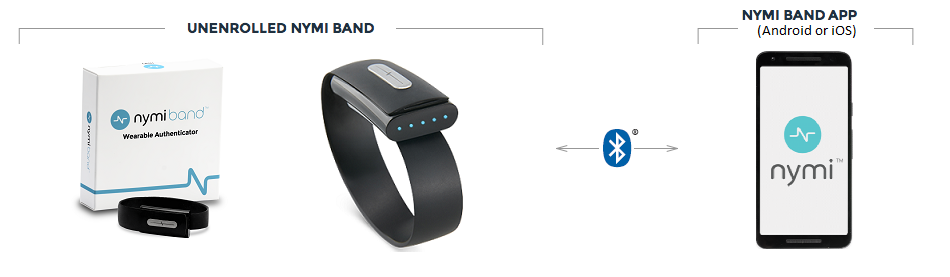
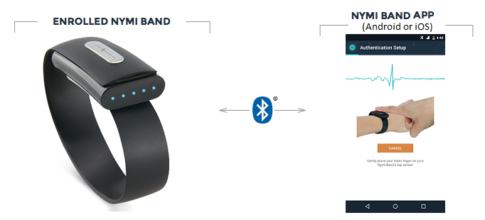
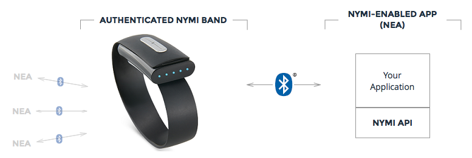
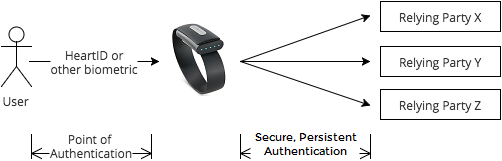
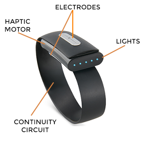
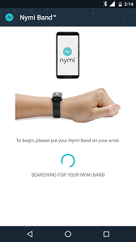
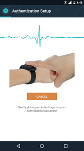
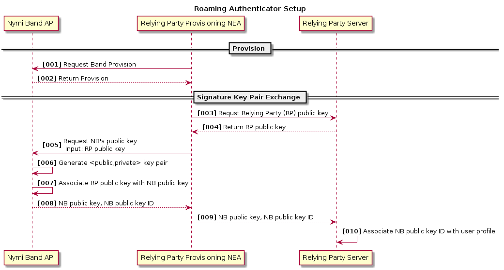
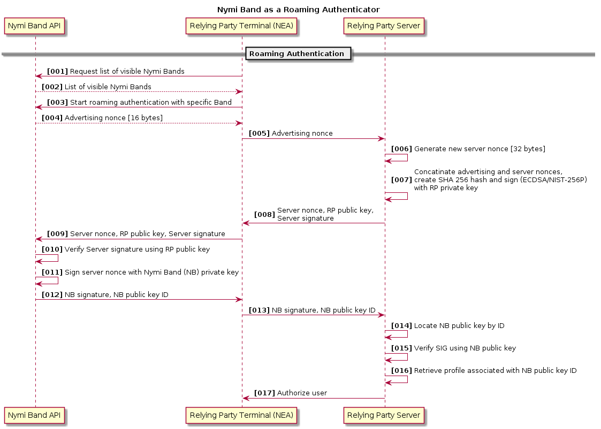
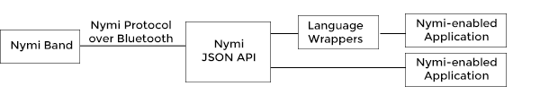

The Nymi Ecosystem
The Nymi Band is an authenticator that interacts with various apps, devices, and identity systems. The collection of these apps, devices, identity systems, and Nymi Bands make up the Nymi Ecosystem.
Nymi Bands communicate with the Nymi Ecosystem through Bluetooth® Low Energy wireless technology. At a high level, there are two types of apps in the ecosystem:
- The Nymi Band application is a mobile app provided by Nymi. There must be a one-to-one pairing between Nymi Band and app. The Nymi Band app does the following:
- Establishes the one-to-one pairing with a Nymi Band through a one-time setup process
- Manages your alternate authentication options (for example, Touch ID or password)
- Administers the Nymi Band (for example, firmware updates)
- A Nymi-Enabled Application (NEA) is an application (app) that Nymi or the developer community writes, using the Nymi SDK and API. An NEA uses the authentication and/or security functionality provided by an authenticated Nymi Band.
Note: The Nymi Band does not use traditional Bluetooth pairing for communication. The Nymi Band app manages the connection with the Nymi Band, using encryption that is independent of the Bluetooth protocol.
The following diagrams characterize the Nymi Band’s interactions with its paired Nymi Band app, and with the ecosystem of NEAs. It highlights the sequential steps required to use the Nymi Band as an authenticator, beginning with the setup of an out-of-the-box Nymi Band.
Setup
Use the Nymi Band app (available on Google Play™ or the App Store®) to set up your Nymi Band and create an associated biometric profile. Setup requires a Bluetooth® Low Energy wireless connection between your Nymi Band and the Nymi Band app. Profile creation is typically a one-time process in the lifetime of the Nymi Band. However, if you reset the band, you must create a new profile.

Authentication
A Nymi Band is authenticated by HeartID on the Nymi Band itself, or by Touch ID or other secure mechanism through the Nymi Band app. Authentication is typically done once a day, and persists until you unclasp the band.

NEA Communication
An NEA communicates with an authenticated Nymi Band through the Nymi API and Bluetooth® wireless technology. The Nymi Band must explicitly grant an NEA permission to connect to it. This is done through the provisioning process.

The Nymi Band
The Nymi Band enables Always On Authentication™ in the form of a secure, persistent, wearable biometric solution.
Persistent Authentication
Users are typically authenticated to a system by the discrete act of presenting some token, to gain some access or privilege. Examples include entering an account password for a web service, or entering a PIN at an ATM. This type of authentication loses trust over time. For example, many people opt to stay logged into their email to avoid repeatedly typing their password. Here, the confidence that an individual currently using a service is the same individual that authenticated the access decreases as the time since authentication increases. There is a trade-off between security and convenience.
The Nymi Band presents an elegant solution that does not compromise security for convenience. Instead of requiring the user to remember unique and complex passwords to various parties, the user authenticates the Nymi Band, which then relays the user’s authentication status to all subscribing parties. With the Nymi Band acting as the authenticator on behalf of the user, we can now use cryptographic forms of authentication that provide security well above passwords and PINs. Furthermore, confidence in the Nymi Band’s state of authentication is not a function of time thanks to the on-body persistence of the Nymi Band’s authenticated state: the user authenticates the band when it is on their wrist, and when the band comes off the user’s wrist, the Nymi Band transitions to an unauthenticated state, becoming invisible to all parties. This allows an NEA to persistently authenticate a user’s presence without additional effort by the user, opening a world of possibilities to enhance both security and convenience.
The Nymi Band may also be easily integrated into multi-factor authentication systems.
The following diagrams illustrate how the Nymi Band changes the traditional password-based authentication space. A relying party is any entity that requires user authentication.
Password-based solution does not scale well with the increase of relying parties and increase of security requirements for passwords.

Nymi solution provides increased security and greater simplicity.

Anatomy of the Nymi Band.

HeartID - ECG as a Biometric
HeartID™ is the unique biometric authentication algorithm developed by Nymi that uses the electrocardiogram (ECG) of a user as a biometric identifier. An ECG signal is the electrical signal generated by an individual’s heart. The user’s ECG is read through the two electrodes on the Nymi Band, and analyzed by HeartID. HeartID uses machine learning algorithms to extract features relating to the shape of the ECG signal. These algorithms are invariant to the heart rate. That means the HeartID algorithm is not affected by going for a run, or enjoying a cup of coffee. The HeartID algorithm is currently integrated into the Nymi Band itself, and enables on-band user authentication.
Why use ECG as a biometric? One of the earliest biometrics used was fingerprints because they are universal, unique, permanent, and easy to capture. More recently, facial recognition has become common for applications ranging from access control to surveillance. Fingerprints and facial features are categorized as extrinsic biometric identifiers, and they can often be captured without an individual’s consent (known as skimming). ECG, on the other hand, is an intrinsic biometric identifier, and is not susceptible to skimming attacks without an individual’s cooperation. Capturing ECG data requires direct or very close contact with the user, making it suitable for secure, user-controlled biometric recognition systems. Unlike fingerprints, latent samples are not left behind on contact surfaces. Additionally, ECG can be captured through techniques that are seamless and convenient to the user.
Nymi Band App
The Nymi Band app is a mobile application that helps you set up and manage your Nymi Band profile. It is available for Android on Google Play™ and for iOS on the App Store®. To create your profile with the Nymi Band app, follow the instructions in the app. The setup process involves capturing approximately one minute of heartbeat data with the Nymi Band, as well as creating a secondary method of authentication (for example, fingerprint recognition, or a password).
The setup process in the Nymi Band app
 
After setup is complete, the Nymi Band app is used for managing profile settings, fitness tracking data, and alternate authentication methods, enhancing your biometric profile with more heartbeat data, and managing your provisions to NEAs.
Nymi-enabled Apps
Nymi-enabled Applications (NEAs) are applications that use the Nymi Band’s authentication and security capabilities. An NEA communicates only with authenticated Nymi Bands. NEAs are written and managed by relying parties (RP). A relying party is defined as an entity, with a physical or web presence, that uses the Nymi Band to authenticate its users.
NEAs can run on any machine that is Bluetooth® compliant and runs a supported platform. See the Nymi API Concepts section to learn about the technical specifications of an NEA and how it can interact with the Nymi API.
Nymi API: Concepts
This section outlines the key concepts and features that are exposed through the Nymi API (NAPI) for the development of a Nymi-Enabled Application (NEA).
The available feature set depends on whether the Nymi Band’s interaction with the NEA is characterized as a bound authenticator or a roaming authenticator. In either case, the Nymi Band is the authenticator.
Communication between an NEA and the Nymi Band is always initiated by the NEA. If interpreted as the client-server model, the Nymi Band is a server and the NEA is a client. In Bluetooth terminology, the Nymi Band is a peripheral device and the NEA is a central device.
In this section, every reference to a Nymi Band must be understood as an authenticated Nymi Band.
See the The Nymi Ecosystem section for an overview of how to authenticate a Nymi Band.
Nymi Band Information
An NEA can retrieve basic information from any Nymi Band that is within Bluetooth transmission range. The following properties are exposed:
- Authentication status: Indicates the Nymi Band’s authentication status (also referred to as
foundstatus). Possible values include: undetected, unclasped, unprovisionable, anonymous, discovered, provisioning, identified, and authenticated. - Presence status: Indicates whether the Nymi Band is present within range of the NEA. Possible values include: Yes, Likely, Unlikely, and No.
- Provision status: Indicates if the Nymi Band is provisioned to the inquiring NEA.
- RSSI : A measure of Bluetooth signal strength in the range [-1 (very strong), -90 (weak)].
- Smoothed RSSI: An exponential smoothing algorithm applied to the RSSI stream.
- Time since last contact: The amount of time, in seconds, since the Nymi Band was last heard from.
- Authentication window remaining: A counter indicating how much of the authentication window remains. The total window is 60 seconds. If no contact with the Nymi Band occurs during this time, then the Presence status changes.
- Number of commands queued: The number of operations in the Nymi Band’s work queue.
Important: Obtaining information about a Nymi Band does not imply a secure identification of an authenticated Nymi Band. See the Bound Authentication section to learn about how to securely identify an authenticated Nymi Band.
Bound Authenticator
A bound authenticator is one that has a logical coupling with a device that calls on the authenticator. In the Nymi ecosystem, this logical coupling is referred to as provisioning, and it establishes a trusted relationship between the Nymi Band and a specific NEA running on a specific device.
Provisioning allows an NEA to do the following:
- Securely authenticate an associated Nymi Band.
- Communicate a positive or negative status through haptic feedback to the Nymi Band.
- Use a number of security features offered by the Nymi Band. These concepts are explained below.
Provisioning
The one-time process of provisioning is initiated by the Nymi Band, and agreed upon mutually by the NEA and the Nymi Band. The process entails a cryptographic key exchange that allows both parties to securely identify each other and communicate in future sessions.
The Developer Quick Start describes how to provision a Nymi Band with the sample app. The following high level steps are an illustration of the concepts behind the provisioning process.
-
The user puts their authenticated Nymi Band in provisioning mode, by tapping the band until the LED lights display an outward animated pattern (that is, from the center light out).
-
The NEA instructs NAPI to start provisioning. NAPI starts to scan for Nymi Bands in provisioning mode.
-
To ensure the NEA has found the right Nymi Band, since there may be multiple bands in provisioning mode simultaneously, a pattern must be matched. This pattern is generated on the Nymi Band and projected onto the lights of the Nymi Band. This pattern is also computed independently by NAPI and sent to the NEA. It is up to the wearer of the Nymi Band to confirm that the pattern generated on the Nymi Band matches the pattern generated by NAPI. This step is referred to as agreement.
- The NEA now has the pattern of some provisioning band that it has connected with. The NEA can either:
- display the pattern to the user, and ask for confirmation that the displayed pattern matches that on the Nymi Band OR
- ask the user to input the pattern on their Nymi Band, and proceed if it matches the pattern sent to the NEA by NAPI
The first approach is more convenient for the user, while the second provides greater certainty of a correct match.
-
After the user confirms a match, the NEA confirms to the Nymi Band that it wants to provision with it.
- The NEA then receives a provision ID (
pid) from the Nymi Band, confirming that the two are provisioned. Important: The provision ID must be kept private to the NEA.
The provision can be invalidated by either party unilaterally. A provision on the Nymi Band can be removed through the Nymi Band app or through NAPI. An NEA invalidates a provision by destroying or eliminating access to the provision ID.
Bound Authentication
Consider an application in which a decision or task depends on the presence of a provisioned Nymi Band. For example, when a user specifies intent to log into a service or device, an NEA administrating the login needs to authenticate the user based on the presence of their Nymi Band. The Nymi API communicates that it has securely authenticated the Nymi Band through the found enum, which must take the value of found::authenticated.
Remember: Retrieving information from the Nymi Band is not the same as securely authenticating the band.
The Nymi Band continuously broadcasts its authenticated state to its provisioned NEAs. NAPI allows synchronous and asynchronous approaches to receiving this broadcast. An NEA may poll NAPI to confirm that a provisioned Nymi Band is present (within Bluetooth transmission range) and authenticated, or it can register callbacks with NAPI, and request to be notified when the Nymi Band’s status has changed. Neither of these approaches require a connection with the Nymi Band in the Bluetooth sense.
Cryptographic Functions
The Nymi Band exposes the following cryptographic functionality to NEAs with which it is provisioned. When using these features, NAPI establishes a Bluetooth connection with the Nymi Band.
-
High-Quality Entropy
The Nymi Band has a hardware-backed entropy source suitable for generating cryptographic keys. This can be queried by an NEA in 128 bit increments and is exposed in two forms:
- Pseudo-random number generation
- Symmetric key generation and retrieval, with guarded option
In the first form, the Nymi Band returns the 128 bit block without storing this block anywhere.
In the second form, the 128 bit symmetric key, K, is stored on the Nymi Band. The key (K) is returned to the NEA.
The NEA must handle K carefully, as external parties are not privy to its value. The NEA may keep K in volatile memory only for the purpose of, and within the scope and time necessary for, the NEA to perform the required cryptographic operations with K. In particular, the NEA must never save K to persistent storage.
-
Guarded Symmetric Keys
Guarded symmetric keys add user intent to the key generation and retrieval. The first time a guarded symmetric key is requested for a provision, the Nymi Band notifies the user with haptic feedback and a light pattern. The user must confirm the request with a gesture (double tap) on the Nymi Band. If the gesture is not performed within 10 seconds of the notification, the operation fails. Each time this guarded key is requested, the user must perform the gesture.
-
Digital signing
The Nymi Band can generate public-private key pairs <vk,sk> for Elliptic Curve Digital Signature Algorithm (ECDSA) signing. ECDSA requires the specification of both an elliptic curve and a hash function. The hash function is currently fixed as SHA256. The following curve types are supported:
- NIST P-256
- Secp256k1
To request a signature, the NEA must specify the desired curve type and provide a message to be signed.
The secret key of the key pair, sk is saved on the Nymi Band and is not shared with any parties. A 64-byte verification key vk and the signed message are returned to the NEA. Using standard cryptographic libraries, the NEA can verify the signature by providing the signed message, the original message, vk, and the ECDSA curve type to a verification function.
Example uses of this feature include SSH, which accepts NIST P-256 curves, and Bitcoin, which accepts Secp256k1 curves.
-
Time-based one-time password (TOTP)
The Nymi Band can generate time-based one-time password (TOTP) tokens using the current time and a secret key as inputs. Only the secret key needs to be provided by the NEA. TOTP tokens are accepted as a second factor for login credentials at an increasing number of web services. For example, you want to log into your account at site X, and X accepts TOTP tokens as a second factor of authentication. The required workflow is as follows:
-
One time setup:
-
Enable 2-FA with site X.
-
Site X generates a secret key, often as a QR code.
-
An NEA provides the secret key in hexadecimal to the Nymi Band, where it is stored.
-
-
Recurring step:
- At every subsequent login to site X, an NEA prompts the Nymi Band to generate a TOTP token. This token, a 6-digit number by standard, should be passed to site X to satisfy 2-FA login requirements.
-
-
Guarded TOTP
When registering a TOTP key, an NEA can configure the Nymi Band to require user confirmation, in the form of a gesture (double tap), for subsequent retrieval of tokens. At token retrieval time, an NEA’s request for such a guarded token will timeout in 10 seconds without user confirmation.
Providing Feedback to the Nymi Band
An NEA can send haptic feedback to a Nymi Band, to communicate a positive or negative result/outcome to the user. A positive outcome is a single vibration (or ‘buzz’), while a negative one is a double vibration (buzz twice).
Roaming Authenticator
Roaming Authenticator mode is designed for use cases where a permanent 1:1 relationship between a Nymi Band and a Nymi-Enabled Application (NEA) is not feasible. Such use cases could include things like airport kiosks, payment terminals, hospital terminals, or hotel smart locks. These terminals process high volumes of user traffic, and a user’s interaction with such terminals may be short-lived; possibly a single encounter. Furthermore, it is not possible to provision a user’s Nymi Band with each terminal with which the user might interact.
A major difference between solutions using Roaming mode and Bound mode is that a roaming solution requires a central server that can be accessed during both band provisioning and actual authentication. This Relying Party Server (RPS) associates a band with a user identity during band registration and then returns that user identity (and possibly provides some authorization services) during roaming authentication.
Roaming Authentication consists of two basic steps:
- Registration
Registration occurs only once and requires a 1:1 provision with a registration NEA. During this process, public keys are exchanged between this NEA and a band, and the Relying Party Server associates this key and a key ID returned by the band with a user identity. - Authentication
During authentication no provision is required. An NEA simply selects any available band (found via NAPI) and begins authentication. By exchanging a series of signed nonces the RPS and NAPI can verify each others’ identities and the NEA ends up with a verified key ID. That key ID can then be used to look-up a previously registered user identity.
Note: Unlike a bound authenticator, a roaming authenticator only acts as a point-in-time authentication source. After it is authenticated, the Nymi Band does not exchange presence information with NAPI and does not generate notifications. In order to verify the continued presence of a registered band the NEA itself must re-authenticate the band over time.
Registration
A Nymi Band provisions with an enrollment NEA owned by the relying party. The Nymi Band and the relying party exchange public keys through the enrollment NEA, allowing for mutual identification between the two in future encounters. The message diagram below illustrates the registration process.

Roaming Authentication
After registration, the Nymi Band can be presented as an authenticator to the relying party’s terminals. Such terminals also run an NEA that is not provisioned to the Nymi Band. The terminal NEA and the Nymi Band engage in two-way ECDSA signature verification.
The terminal’s NEA retrieves an advertisement nonce through a Nymi API function call and passes it to the relying party server. The server signs the hash of the Nymi Band’s nonce concatenated with a server nonce. This can be any random value generated by the server. This signature is sent to the Nymi Band for verification. The server nonce and the relying party public key are also sent along with the signature.
The Nymi Band uses the relying party’s public key to verify the signature. If verification is successful, the Nymi Band signs the server nonce with its private key. This signature is sent to the terminal’s NEA, and passed along to the server for the verification. If this verification is also successful, the terminal is notified by the server to accept the Nymi Band as a token of authentication, and to allow the relevant access rights.

Security
Authenticating with the Nymi Band means you are using strong cryptographic technologies for authentication that are backed by the biometric identification of the wearer.
When an NEA gets an indication of the presence of a band, this is based on cryptographic authentication. In the case of bound authentication, there is a proof of possession of a shared secret key (the provision). In the case of roaming authentication, this is authentication based on possession of a signing key.
All keying material stored on the Nymi Band is stored in such a way as to be completely inaccessible when the band is unauthenticated. Even if an attacker has physical access to the device, the keys used for authentication cannot be easily extracted.
Another important element in the security design of the Nymi Band concerns the storage and usage of the biometric data. Data collected for the enrollment and matching of HeartID is stored only on the Nymi Band itself. Specifically, this data is not shared with NEAs that provision to the band.
Moreover, the fact that the biometrics are stored in a decentralized manner means there is no biometric stockpile in the Nymi system. This is significant as biometric databases are appealing targets for cyber criminals, and reports of biometric database compromises are more and more common.
Nymi Communication
The Nymi communication stack is composed of the following layers:

The Nymi API Core communicates with the Nymi Band using the Nymi System Protocol (NSP) over Bluetooth Low Energy. Having our own system protocol over the Bluetooth protocol allows for stricter security policies, beyond what is offered by Bluetooth encryption.
Using the Nymulator
The Nymulator is a standalone application supported on Windows OS and OS X that simulates up to 6 physical Nymi Bands, for development and testing of NEAs. Simulated Nymi Bands are always enrolled and authenticated, since NEAs interact with Nymi Bands only within this capacity.
The Nymulator simulates the logic and the state of a Nymi Band, not the physical hardware. While the message content sent between a virtual Nymi Band and an NEA are the same as those of a physical band, the communication channel is TCP/IP as opposed to Bluetooth Low Energy. Because it runs on the network, the host machine on which the Nymulator is running can differ from the device running the NEA. For example, your Android NEA can communicate with an instance of the Nymulator running on your desktop.
Virtual Nymi Bands support the same feature set as the physical band. This includes sending haptic feedback, cryptographic functionality, and continuous authentication for bound authenticators.
The following table provides an overview of the various features of the Nymulator app.
| Feature | Description |
|---|---|
| Add | Creates a new Nymi Band instance. The result is an enrolled and authenticated Nymi Band with no provisions. You can add up to 6 Nymi Bands simultaneously. Each Nymi Band can have up to provisions, the same as for a physical band. |
| Rename | Click the pencil in the right panel to rename a Nymi Band. |
| Remove | Hover over a Nymi Band in the left panel list and click X to remove it. |
| Save | Save the current list of Nymi Bands. This saves all associated provisions and keys. |
| Load | Load a previously saved list of Nymi Bands. |
| Nymi Band UI | The top right image reflects the UI of the Nymi Band. It conveys haptic notifications through GUI shake, as well as LED patterns and animations, for example, for provisioning agreement. |
| RSSI scrollbar | Use the RSSI scroll bar to simulate the RSSI value of a Nymi Band; a lower values maps to a weaker Bluetooth signal strength. If RSSI is set to -100, the Nymi Band stops advertising. This simulates the Nymi Band moving out of Bluetooth transmission range. To enable advertisement, set the RSSi to any value greater than -100. |
| Context-sensitive Button | The text on the button under the RSSI scrollbar reflects its context-sensitive functionality. For example, it may say “Begin Provisioning” or “Quad Tap”. The latter message simulates a user’s quad tap gesture on the Nymi Band. By default, quad tap is used to put the Nymi Band in provisioning mode. |
| Activity Log | Logs results of user actions (such as adding a band) as well as the state of the Nymi Band (for example, advertising). |
Connecting to the Nymulator
To connect to the Nymulator, the following general requirements must be met. Specific requirements are specified in the Developer Quick Start.
-
The Nymulator must be invoked before the NEA is started, otherwise NAPI will fail to initialize.
-
On OS X there is a distinction in the NAPI library for connecting to the Nymulator vs the physical Nymi Band. The NEA must link/run against the Nymulator version of NAPI (
napinet). -
The Nymulator host machine and the NEA host device must be on the same network. The NEA may need to specify the IP address/port number of the Nymulator host machine.
-
The default port of the Nymulator is 9088. If this port is in use, it will decrement the port number to find an open port.
Windows OS Specific Requirements
- Microsoft Visual Studio 2013 Redistributable is required.
Glossary
| Term | Definition |
|---|---|
| Authenticator | A device that is responsible for securely verifying the user to various relying parties, and maintaining the cryptographic material required for the relying party authentication. |
| Bluetooth® Low Energy | A wireless technology that consumes a fraction of the power of Classic Bluetooth®. The Nymi Band uses Bluetooth® Low Energy to communicate with other devices. |
| Bound Authenticator | An authenticator that provisions with a restricted set of trusted devices. |
| ECG | Electrocardiogram is a measure of electrical activity of the heart. This signal is analyzed by the HeartID algorithm. |
| HeartID | An algorithm developed by Nymi that uses machine learning to extract underlying features of an ECG signal, and uses these features in ECG recognition |
| Nymi Band App | An application developed by Nymi which is required to set up and manage the Nymi Band. |
| NEA | Nymi-Enabled Application. An application developed by a relying party that uses the Nymi API to communicate with the Nymi Band. |
| Nymi Ecosystem | The collection of Nymi Bands, Nymi Band apps, NEAs, Nymi-based identity systems, and the interactions between these entities. |
| Provisioning | The sharing of a secret cryptographic key that allows a Nymi Band and an NEA on a particular device to securely identify each other. |
| Relying Party | (RP) An entity with a physical or web presence that uses the Nymi Band to authenticate its users. |
| Roaming Authenticator | An authenticator that is configured to communicate with unprovisioned devices of a relying party, provided that it is provisioned with the relying party’s enrollment NEA. |
| RSSI | Received Signal Strength Indicator. A measure of the strength of an incoming Bluetooth® wireless signal in the range [-1 (very strong), -90 (weak)]. Lower RSSI values map to weaker Bluetooth® wireless signal strength. |
Links and Downloads
SDK for Windows and Mac OS X
See Supported Platforms for a list of supported operating systems.
SDK 4.1 includes the Nymi API, documentation, and the Nymulator.
NAPI JSON Reference Documentation
NAPI C++ Reference Documentation
NAPI C Reference Documentation
Sample Applications
For NAPI 4.1:
For NAPI 4.0:
Trademarks
Nymi, Nymi Band, HeartID, and Always On Authentication are registered trademarks of Nymi Inc. Apple, App Store, Mac, OS X, Touch ID, and Xcode are trademarks of Apple Inc., registered in the U.S. and other countries. The Bluetooth® word mark and logos are registered trademarks owned by Bluetooth SIG, Inc. Firefox is a registered trademark of the Mozilla Foundation. Git and the Git logo are either registered trademarks or trademarks of Software Freedom Conservancy, Inc, corporate home of the Git Project, in the United States and/or other countries. GITHUB and the GITHUB logo design are exclusive trademarks registered in the United States by GitHub, Inc. Google, Android, Chrome, and Play are registered trademarks of Google Inc. Java is a registered trademark of Oracle and/or its affiliates. Microsoft and Windows are either registered trademarks or trademarks of Microsoft Corporation in the United States and/or other countries. Python and PyCon are trademarks or registered trademarks of the Python Software Foundation. UNIX is a registered trademark of The Open Group. All other trademarks, servicemarks, and registered trademarks are the property of their respective owners.